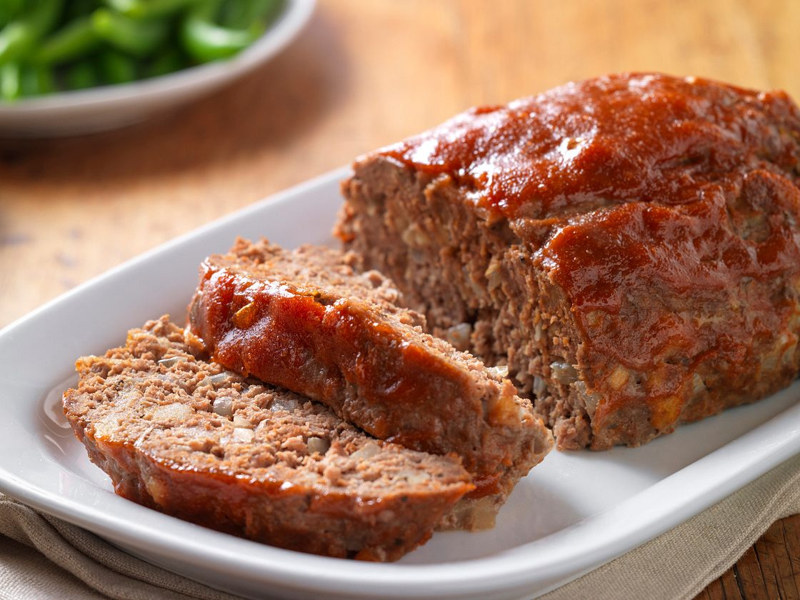

Meatloaf

Description
This meatloaf is not the best thing you could be eating, I actually stole this recipe, because of the name of it,
it's like "worlds last meatloaf" or something, it uses bacon grease, and anyway meatloaf represents some weird
lynchian cronenbergian American movie connection to me, like the white picket fence and the family meal as horror
tropes and all that. As a thirteen year old, I thought meatloaf was profoundly evil. That sounds like a mission
statement.
Ingredients
- 2 pounds Ground beef
- 1 Tbsp Bacon grease (or)
- 1 cup Onion, minced
- 3 /4 cup Celery, minced
- 3 /4 cup Bell pepper, minced
- 1 tsp Garlic, minced
- 1 /8 tsp Thyme, dry
- 2 tsp Steak Seasoning
- 1 Tbsp Salt
- 1 cup Milk
Steps
- Preheat oven to 325 degrees.
- Heat the bacon grease in a large skillet over medium heat.
- Combine milk, eggs, Worcestershire and ketchup and mix well. Place ground beef, cooled vegetables and egg mixture into a large mixing bowl.
- Ash ciggarette in mixing bowl
- Do the "Ritual Dance" of the sacred family
- Bow to the oven as it begins to glow intensely